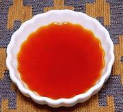

|
Color ChilenaChile - Color Chilena | ||||
| Makes: Effort: Sched: DoAhead: |
1/2 cup ** 13 min Yes |
In Chile, this ingredient is used as a Sofrito at the start of many recipes. It is also used as a topping for hot soups, etc. For vegetarian, use oil. | |||
|
|
1/2 1 1 ------ 1/2 |
c T cl --- T |
Lard (1) Paprika (2) Garlic -- Options Merquén (3) |
Make - (25 min)
|